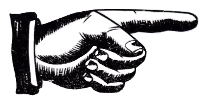
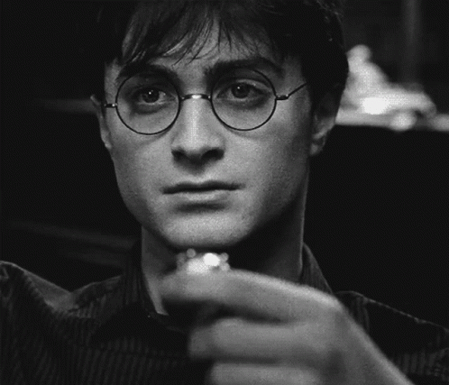
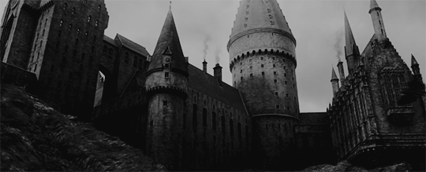
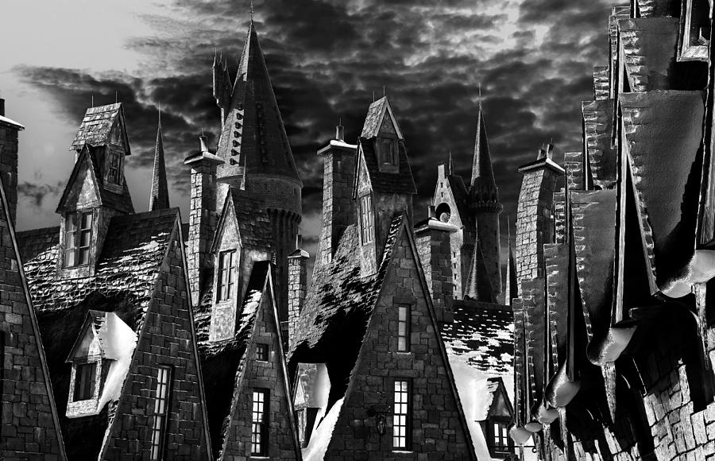

O PROFETA DIÁRIOHarry Potter encontra Pomo de Ouro ligado à Relíquia da Morte
Uma descoberta arrebatadora agita o mundo bruxo hoje, enquanto relatos confirmam que Harry Potter, lendário herói da Segunda Guerra Bruxa, encontrou um Pomo de Ouro peculiar, associado a uma Relíquia da Morte. O artefato foi descoberto durante uma expedição exploratória em um terreno ancestral pertencente aos Potters, na região de Godric's Hollow.
Segundo fontes confiáveis, o Pomo de Ouro em questão apresenta inscrições mágicas incomuns e padrões de ouro antigo que parecem coincidir com descrições históricas da Pedra da Ressurreição, uma das três famosas Relíquias da Morte. O Ministério da Magia está atualmente investigando a autenticidade e o potencial místico do artefato.


Nova Direção em Hogwarts
Após semanas de especulação e antecipação, a Escola de Magia e Bruxaria de Hogwarts anunciou oficialmente seu novo Diretor. O Professor Alastor Prewett, figura respeitada, assume a responsabilidade de liderar a instituição em uma nova fase de sua história.
Sua nomeação foi saudada por estudantes e professores como um passo importante. "Hogwarts seguirá como farol de excelência mágica", disse o novo diretor em seu discurso inaugural.

Banco Gringotts
O Banco Gringotts lançou o programa "Finanças Mágicas para Jovens", com workshops sobre administração de dinheiro e segurança financeira bruxa.
Loja Olivaras
Descontos imperdíveis em varinhas e acessórios mágicos até o final de agosto.
Festival Anual de Hogsmeade
O vilarejo está em festa com feiras, competições de feitiços e atrações mágicas neste verão encantador.
Cobertura do Festival
O Profeta Diário estará no Festival Anual de Verão de Hogsmeade com cobertura completa das atrações.
